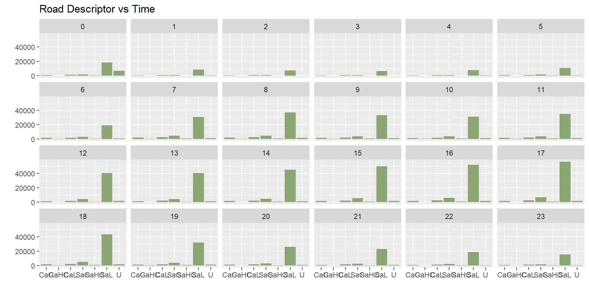
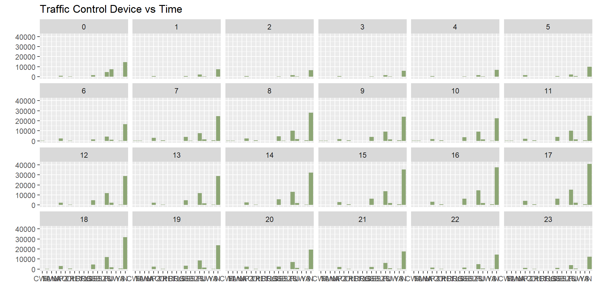
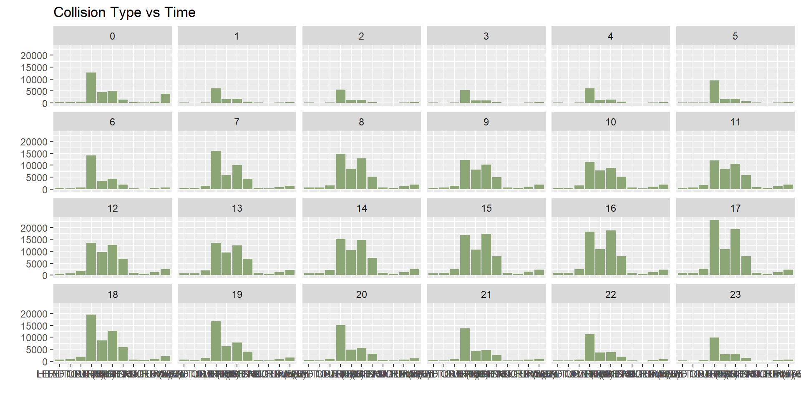
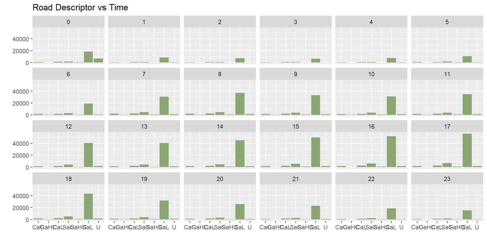
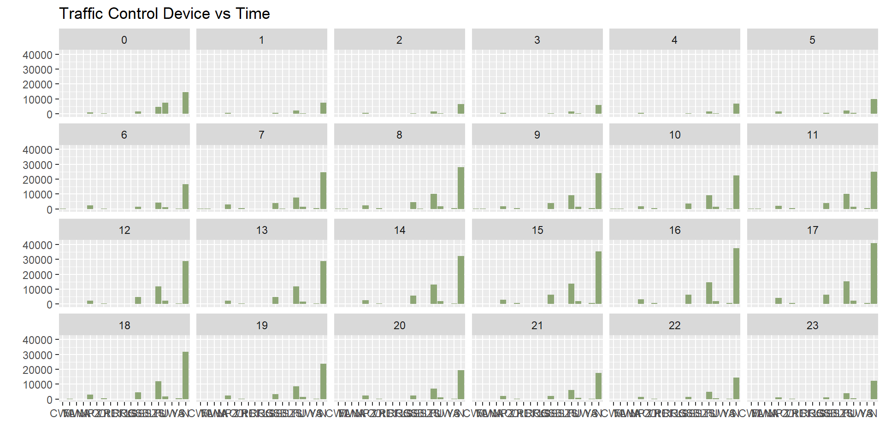
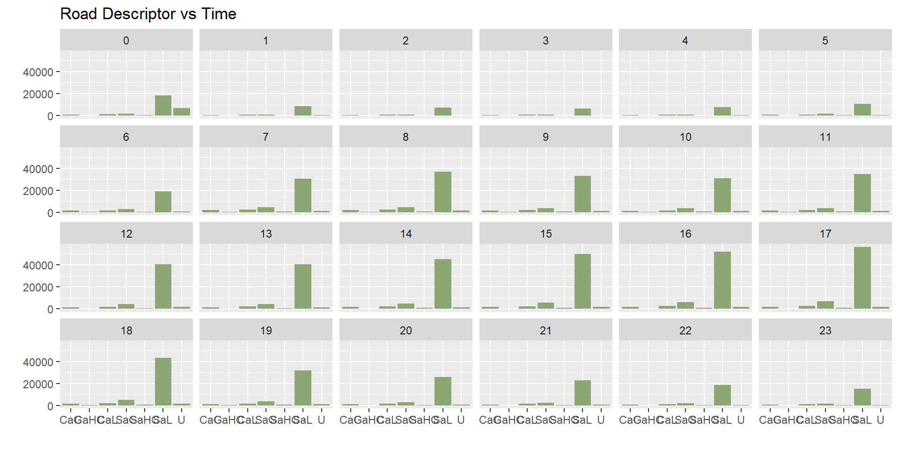
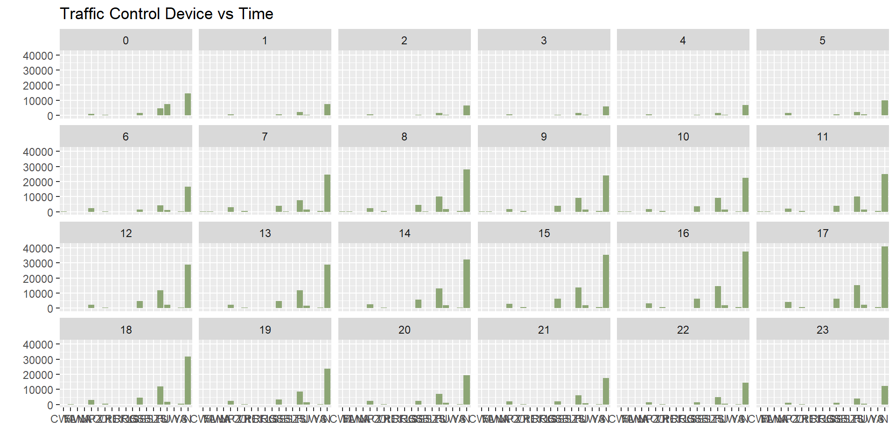
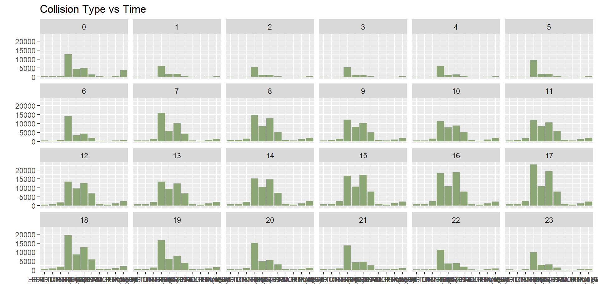
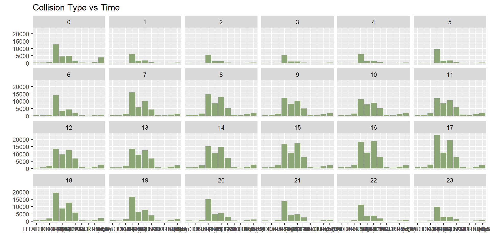

NY Motor Vehicle Crashes Analysis 2018-2019
1
Introduction
1.0.1
Background
1.0.2
Problem Statement
2
Data sources
2.0.1
Data Description
2.0.2
Columns Description
3
Data transformation
3.1
Overviews
3.2
Change Format of Variable
Date
3.3
Extract reason of crashing from variable
Event Descriptor
3.3.1
Collision_Type
3.3.2
Collision_Detail
3.4
Convert to Factor Level
4
Missing values
5
Results
5.1
When
5.1.1
Time in Day
5.1.2
Day of Week
5.1.3
Month of Year
5.2
Where
6
Interactive component
7
Conclusion
Published with bookdown
NY traffic accident analysis
Chapter 5
Results
5.1
When
5.1.1
Time in Day


5.1.2
Day of Week
5.1.3
Month of Year
5.2
Where

 
 
